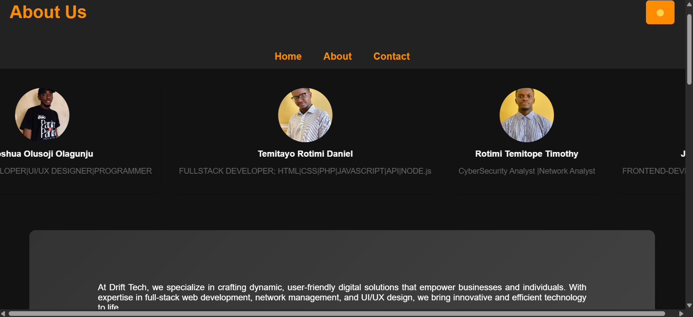

Drift-Tech Website



The DriftTech website is a full-stack platform showcasing expertise in web development, cybersecurity, and IT consulting. Built with HTML, CSS, JavaScript, and PHP, it ensures a seamless and responsive user experience across all devices. The site features an interactive service catalog, allowing users to explore offerings, learn about past projects, and connect for consultations. It supports dynamic content updates and ensures smooth navigation with an intuitive UI. Security and performance are prioritized, making the platform both efficient and scalable. I assisted in developing the front-end, focusing on content structure, layout design, and user experience to create a visually appealing and functional interface.
TechStack Used
HTML
CSS
Visual-Studio
Bootstrap
JavaScript
ReactJs
PHP